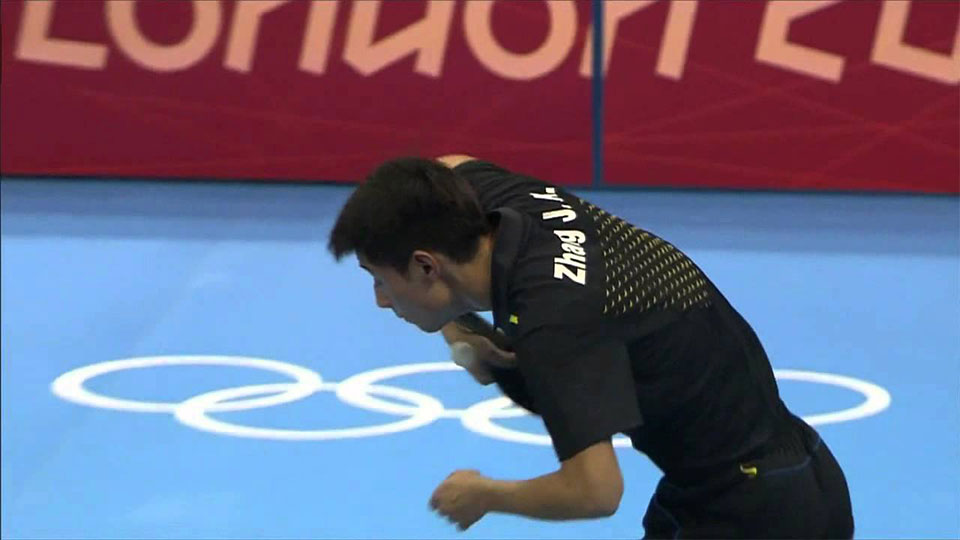

One arm path. Vary one of three things at contact. Where on the blade you contact is dominant[2][17][19]: the tip travels fastest because it is furthest from the wrist pivot, so tip contact loads heavy backspin; contact near the handle — the (1,2)/(2,2) zone in EmRatThich's notation — produces a no-spin float, with the same swing and same wrist snap.
"For a forehand backspin serve, you would snap the wrist forward and contact the ball near the tip… For a no-spin serve, you would contact the ball near the handle… Same motion, same wrist snap, but now little spin."— Larry Hodges[2]
When in the arc you contact is the second lever. Lodziak: down-swing → backspin, up-swing → topspin, action looks the same to the opponent[1]. Rosario sharpens it: the bottom of a down-then-up swing — where direction reverses — is when the spin axis is hardest to read[6].
A last-instant bat-angle micro-tweak is the third[8]. Top players do all three at once and hide them inside subtle wrist differences rather than visibly different arms[5].
Receiver's failure modePre-commits to push, pops the no-spin up[3].
First-pass cost~2 weeks of focused serve practice. Single highest-ROI deception lever in the game.
